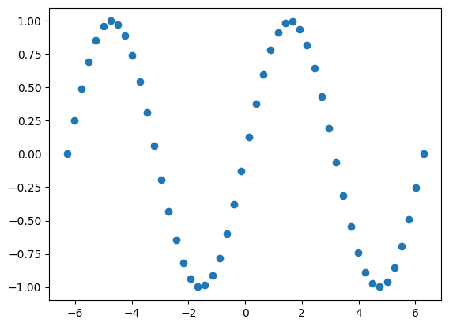
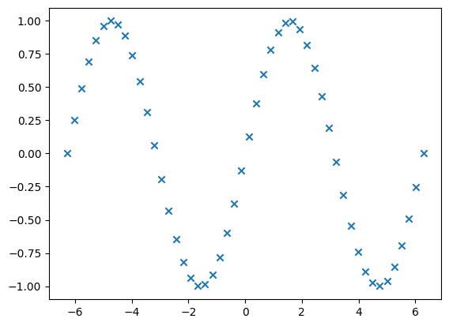
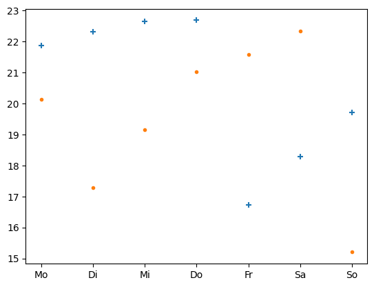
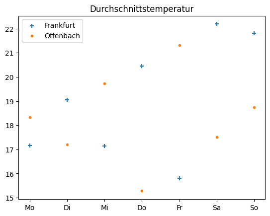

9.2 Streudiagramme#
Lernziele#
Lernziele
Sie können Messwerte mit Streudiagrammen darstellen.
Streudiagramme#
Bei Streudiagrammen werden nicht die Punkte \((x_1,y_2)\) mit \((x_2,y_2)\) mit
\((x_3,y_3)\) usw. durch Linien verbunden, sondern jeder Punkt selbst wird an der
Stelle seiner Koordinaten eingezeichnet. Ob dazu ein Punkt, Kreis, Dreieck oder
Quadrat oder ein anderes Symbol verwendet wird, bleibt dem Anwender überlassen.
Streudiagramme heißen im Englischen Scatter-Plot, daher lautet die entsprechende
Matplotlib-Funktion auch plt.scatter().
import numpy as np
import matplotlib.pyplot as plt
# data
x = np.linspace(-2*np.pi, 2*np.pi, 50)
y = np.sin(x)
# scatter plot
plt.figure()
plt.scatter(x,y)
<matplotlib.collections.PathCollection at 0x7efe7cffad50>

Über die Option marker= lässt sich das Symbol einstellen, mit dem das
Streudiagramm erzeugt wird. Wie Sie sehen, ist ein ausgefüllter Kreis
voreingestellt. Lesen Sie auf der Internetseite
nach, welche Marker-Symbole existieren. Probieren Sie einige der Symbole hier aus:
# data
x = np.linspace(-2*np.pi, 2*np.pi, 50)
y = np.sin(x)
# scatter plot
plt.figure()
plt.scatter(x,y, marker='x')
<matplotlib.collections.PathCollection at 0x7efe7ce69490>

Für bekannte Funktionen wie Sinus oder Kosinus würde man Liniendiagramme verwenden. Streudiagramme eignen sich eher für die Visualisierung einzelner Messungen. Wenn Sie beispielsweise an jeden Wochentag die Temperatur an zwei Orten messen, bietet es sich an, beide Messreihen in einem Streudiagramm zu visualisieren. Dazu sollten Sie unterschiedliche Marker und unterschiedliche Farben verwenden.
# data
x = ['Mo', 'Di', 'Mi', 'Do', 'Fr', 'Sa', 'So']
y1 = np.random.uniform(15,23,7) # Zufallszahlen, um Temperaturmessung zu simulieren
y2 = np.random.uniform(15,23,7) # Zufallszahlen, um Temperaturmessung zu simulieren
# scatter plots
plt.figure()
plt.scatter(x, y1, marker='+')
plt.scatter(x, y2, marker='.')
<matplotlib.collections.PathCollection at 0x7efe7ce22b10>

Dann ist es aber auch notwendig, die Visualisierung zu beschriften. Dazu kennzeichnet
man jeden einzelnen Plot-Aufruf mit einem sogenannten Label, z.B.
plt.scatter(x,y1, label='Messung1'). Zuletzt verwendet man die Funktion
plt.legend(), die eine Legende mit allen Label-Einträgen erzeugt, bei denen die
Farben der Kurven und die Marker korrekt zu den Namen (Labels) zugeordnet
werden.
# data
x = ['Mo', 'Di', 'Mi', 'Do', 'Fr', 'Sa', 'So']
y1 = np.random.uniform(15,23,7)
y2 = np.random.uniform(15,23,7)
# scatter plots
plt.figure()
plt.scatter(x, y1, marker='+', label='Frankfurt')
plt.scatter(x, y2, marker='.', label='Offenbach')
plt.legend()
plt.title('Durchschnittstemperatur')
Text(0.5, 1.0, 'Durchschnittstemperatur')

Mini-Übung
Erzeugen Sie eine Wertetabelle mit den Zahlen 1 bis 50 für x und 50 normalverteilten Zufallszahlen mit Mittelwert 0 und Standardabweichung 1 für y. Visualisieren Sie diese als Streudiagramm. Die Marker sollen rot gefärbte Diamenten sein.
# Hier Ihr Code
Lösung
import matplotlib.pyplot as plt
import numpy as np
# data
x = np.linspace(1, 50, 50)
y = np.random.normal(0, 1, 50)
# plot
plt.figure()
plt.scatter(x,y, color='red', marker='D')
Zusammenfassung und Ausblick#
Das Linien- und das Streudiagramm werden für die Visualisierung von kontinuierlichen Daten verwendet, wohingegen das Balkendiagramm dem Plot von diskreten Daten (Kategorien) dient. Im folgenden Abschnitt verknüpfen wir Matplotlib mit Pandas zur Visualisierung von Tabellendaten in einem DataFrame.